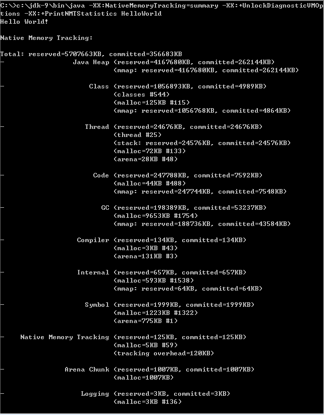

26 如何监控和诊断 JVM 堆内和堆外内存使用？¶
上一讲我介绍了 JVM 内存区域的划分，总结了相关的一些概念，今天我将结合 JVM 参数、工具等方面，进一步分析 JVM 内存结构，包括外部资料相对较少的堆外部分。
今天我要问你的问题是，如何监控和诊断 JVM 堆内和堆外内存使用？
典型回答¶
了解 JVM 内存的方法有很多，具体能力范围也有区别，简单总结如下：
- 可以使用综合性的图形化工具，如 JConsole、VisualVM（注意，从 Oracle JDK 9 开始，VisualVM 已经不再包含在 JDK 安装包中）等。这些工具具体使用起来相对比较直观，直接连接到 Java 进程，然后就可以在图形化界面里掌握内存使用情况。
以 JConsole 为例，其内存页面可以显示常见的 堆内存 和 各种堆外部分 使用状态。
- 也可以使用命令行工具进行运行时查询，如 jstat 和 jmap 等工具都提供了一些选项，可以查看堆、方法区等使用数据。
- 或者，也可以使用 jmap 等提供的命令，生成堆转储（Heap Dump）文件，然后利用 jhat 或 Eclipse MAT 等堆转储分析工具进行详细分析。
- 如果你使用的是 Tomcat、Weblogic 等 Java EE 服务器，这些服务器同样提供了内存管理相关的功能。
- 另外，从某种程度上来说，GC 日志等输出，同样包含着丰富的信息。
这里有一个相对特殊的部分，就是是堆外内存中的直接内存，前面的工具基本不适用，可以使用 JDK 自带的 Native Memory Tracking（NMT）特性，它会从 JVM 本地内存分配的角度进行解读。
考点分析¶
今天选取的问题是 Java 内存管理相关的基础实践，对于普通的内存问题，掌握上面我给出的典型工具和方法就足够了。这个问题也可以理解为考察两个基本方面能力，第一，你是否真的理解了 JVM 的内部结构；第二，具体到特定内存区域，应该使用什么工具或者特性去定位，可以用什么参数调整。
对于 JConsole 等工具的使用细节，我在专栏里不再赘述，如果你还没有接触过，你可以参考JConsole 官方教程。我这里特别推荐Java Mission Control（JMC），这是一个非常强大的工具，不仅仅能够使用JMX进行普通的管理、监控任务，还可以配合Java Flight Recorder（JFR）技术，以非常低的开销，收集和分析 JVM 底层的 Profiling 和事件等信息。目前， Oracle 已经将其开源，如果你有兴趣请可以查看 OpenJDK 的Mission Control项目。
关于内存监控与诊断，我会在知识扩展部分结合 JVM 参数和特性，尽量从庞杂的概念和 JVM 参数选项中，梳理出相对清晰的框架：
- 细化对各部分内存区域的理解，堆内结构是怎样的？如何通过参数调整？
- 堆外内存到底包括哪些部分？具体大小受哪些因素影响？
知识扩展¶
今天的分析，我会结合相关 JVM 参数和工具，进行对比以加深你对内存区域更细粒度的理解。
首先，堆内部是什么结构？
对于堆内存，我在上一讲介绍了最常见的新生代和老年代的划分，其内部结构随着 JVM 的发展和新 GC 方式的引入，可以有不同角度的理解，下图就是年代视角的堆结构示意图。

你可以看到，按照通常的 GC 年代方式划分，Java 堆内分为：
1. 新生代¶
新生代是大部分对象创建和销毁的区域，在通常的 Java 应用中，绝大部分对象生命周期都是很短暂的。其内部又分为 Eden 区域，作为对象初始分配的区域；两个 Survivor，有时候也叫 from、to 区域，被用来放置从 Minor GC 中保留下来的对象。
-
JVM 会随意选取一个 Survivor 区域作为“to”，然后会在 GC 过程中进行区域间拷贝，也就是将 Eden 中存活下来的对象和 from 区域的对象，拷贝到这个“to”区域。这种设计主要是为了防止内存的碎片化，并进一步清理无用对象。
-
从内存模型而不是垃圾收集的角度，对 Eden 区域继续进行划分，Hotspot JVM 还有一个概念叫做 Thread Local Allocation Buffer（TLAB），据我所知所有 OpenJDK 衍生出来的 JVM 都提供了 TLAB 的设计。这是 JVM 为每个线程分配的一个私有缓存区域，否则，多线程同时分配内存时，为避免操作同一地址，可能需要使用加锁等机制，进而影响分配速度，你可以参考下面的示意图。从图中可以看出，TLAB 仍然在堆上，它是分配在 Eden 区域内的。其内部结构比较直观易懂，start、end 就是起始地址，top（指针）则表示已经分配到哪里了。所以我们分配新对象，JVM 就会移动 top，当 top 和 end 相遇时，即表示该缓存已满，JVM 会试图再从 Eden 里分配一块儿。

2. 老年代¶
放置长生命周期的对象，通常都是从 Survivor 区域拷贝过来的对象。当然，也有特殊情况，我们知道普通的对象会被分配在 TLAB 上；如果对象较大，JVM 会试图直接分配在 Eden 其他位置上；如果对象太大，完全无法在新生代找到足够长的连续空闲空间，JVM 就会直接分配到老年代。
3. 永久代¶
这部分就是早期 Hotspot JVM 的方法区实现方式了，储存 Java 类元数据、常量池、Intern 字符串缓存，在 JDK 8 之后就不存在永久代这块儿了。
那么，我们如何利用 JVM 参数，直接影响堆和内部区域的大小呢？我来简单总结一下：
- 最大堆体积
- 初始的最小堆体积
- 老年代和新生代的比例
默认情况下，这个数值是 2，意味着老年代是新生代的 2 倍大；换句话说，新生代是堆大小的 ⅓。
- 当然，也可以不用比例的方式调整新生代的大小，直接指定下面的参数，设定具体的内存大小数值。
- Eden 和 Survivor 的大小是按照比例设置的，如果 SurvivorRatio 是 8，那么 Survivor 区域就是 Eden 的 ⅛ 大小，也就是新生代的 1/10，因为 YoungGen=Eden + 2*Survivor，JVM 参数格式是
- TLAB 当然也可以调整，JVM 实现了复杂的适应策略，如果你有兴趣可以参考这篇说明。
不知道你有没有注意到，我在年代视角的堆结构示意图也就是第一张图中，还标记出了 Virtual 区域，这是块儿什么区域呢？
在 JVM 内部，如果 Xms 小于 Xmx，堆的大小并不会直接扩展到其上限，也就是说保留的空间（reserved）大于实际能够使用的空间（committed）。当内存需求不断增长的时候，JVM 会逐渐扩展新生代等区域的大小，所以 Virtual 区域代表的就是暂时不可用（uncommitted）的空间。
第二，分析完堆内空间，我们一起来看看 JVM 堆外内存到底包括什么？
在 JMC 或 JConsole 的内存管理界面，会统计部分非堆内存，但提供的信息相对有限，下图就是 JMC 活动内存池的截图。

接下来我会依赖 NMT 特性对 JVM 进行分析，它所提供的详细分类信息，非常有助于理解 JVM 内部实现。
首先来做些准备工作，开启 NMT 并选择 summary 模式，
为了方便获取和对比 NMT 输出，选择在应用退出时打印 NMT 统计信息
然后，执行一个简单的在标准输出打印 HelloWorld 的程序，就可以得到下面的输出
{kind=link}
我来仔细分析一下，NMT 所表征的 JVM 本地内存使用：
- 第一部分非常明显是 Java 堆，我已经分析过使用什么参数调整，不再赘述。
- 第二部分是 Class 内存占用，它所统计的就是 Java 类元数据所占用的空间，JVM 可以通过类似下面的参数调整其大小：
对于本例，因为 HelloWorld 没有什么用户类库，所以其内存占用主要是启动类加载器（Bootstrap）加载的核心类库。你可以使用下面的小技巧，调整启动类加载器元数据区，这主要是为了对比以加深理解，也许只有在 hack JDK 时才有实际意义。
- 下面是 Thread，这里既包括 Java 线程，如程序主线程、Cleaner 线程等，也包括 GC 等本地线程。你有没有注意到，即使是一个 HelloWorld 程序，这个线程数量竟然还有 25。似乎有很多浪费，设想我们要用 Java 作为 Serverless 运行时，每个 function 是非常短暂的，如何降低线程数量呢？ 如果你充分理解了专栏讲解的内容，对 JVM 内部有了充分理解，思路就很清晰了： JDK 9 的默认 GC 是 G1，虽然它在较大堆场景表现良好，但本身就会比传统的 Parallel GC 或者 Serial GC 之类复杂太多，所以要么降低其并行线程数目，要么直接切换 GC 类型； JIT 编译默认是开启了 TieredCompilation 的，将其关闭，那么 JIT 也会变得简单，相应本地线程也会减少。 我们来对比一下，这是默认参数情况的输出：
{kind=link}
下面是替换了默认 GC，并关闭 TieredCompilation 的命令行
{kind=link}
得到的统计信息如下，线程数目从 25 降到了 17，消耗的内存也下降了大概 ⅓。
- 接下来是 Code 统计信息，显然这是 CodeCache 相关内存，也就是 JIT compiler 存储编译热点方法等信息的地方，JVM 提供了一系列参数可以限制其初始值和最大值等，例如：
你可以设置下列 JVM 参数，也可以只设置其中一个，进一步判断不同参数对 CodeCache 大小的影响。

很明显，CodeCache 空间下降非常大，这是因为我们关闭了复杂的 TieredCompilation，而且还限制了其初始大小。
- 下面就是 GC 部分了，就像我前面介绍的，G1 等垃圾收集器其本身的设施和数据结构就非常复杂和庞大，例如 Remembered Set 通常都会占用 20%~30% 的堆空间。如果我把 GC 明确修改为相对简单的 Serial GC，会有什么效果呢？
使用命令：

可见，不仅总线程数大大降低（25 → 13），而且 GC 设施本身的内存开销就少了非常多。据我所知，AWS Lambda 中 Java 运行时就是使用的 Serial GC，可以大大降低单个 function 的启动和运行开销。
- Compiler 部分，就是 JIT 的开销，显然关闭 TieredCompilation 会降低内存使用。
- 其他一些部分占比都非常低，通常也不会出现内存使用问题，请参考官方文档。唯一的例外就是 Internal（JDK 11 以后在 Other 部分）部分，其统计信息 包含着 Direct Buffer 的直接内存，这其实是堆外内存中比较敏感的部分，很多堆外内存 OOM 就发生在这里，请参考专栏第 12 讲的处理步骤。原则上 Direct Buffer 是不推荐频繁创建或销毁的，如果你怀疑直接内存区域有问题，通常可以通过类似 instrument 构造函数等手段，排查可能的问题。
JVM 内部结构就介绍到这里，主要目的是为了加深理解，很多方面只有在定制或调优 JVM 运行时才能真正涉及，随着微服务和 Serverless 等技术的兴起，JDK 确实存在着为新特征的工作负载进行定制的需求。
今天我结合 JVM 参数和特性，系统地分析了 JVM 堆内和堆外内存结构，相信你一定对 JVM 内存结构有了比较深入的了解，在定制 Java 运行时或者处理 OOM 等问题的时候，思路也会更加清晰。JVM 问题千奇百怪，如果你能快速将问题缩小，大致就能清楚问题可能出在哪里，例如如果定位到问题可能是堆内存泄漏，往往就已经有非常清晰的思路和工具可以去解决了。
一课一练¶
关于今天我们讨论的题目你做到心中有数了吗？今天的思考题是，如果用程序的方式而不是工具，对 Java 内存使用进行监控，有哪些技术可以做到?